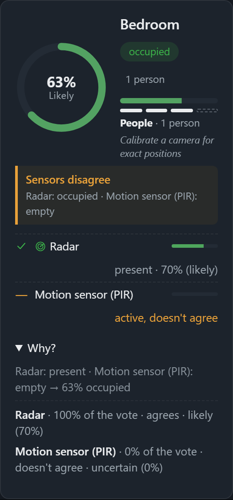

How Wavr works
One fusion engine turns whatever sensors you have into a per-room state. This page is the mechanics: what feeds it, how it stays honest about uncertainty, and the surfaces that share it.
Fusion, not just aggregation
Fused confidence is the best present evidence: trust weight × the source's own confidence × freshness decay, so one weak, stale source can never fake certainty on its own. Every source's own reading stays visible; nothing is silently arbitrated away.

| Signal | What it needs | Status |
|---|---|---|
| Network scan | Nothing extra | Works today |
| Bluetooth presence | A host Bluetooth adapter | Works today |
| Camera (person detection) | An RTSP camera or webcam, boots OFF | From source, not in the installer |
| mmWave radar (HLK-LD2450) | A ~€15 sensor over USB-serial | From source, not in the installer |
| WiFi CSI (ruview) | A channel-state-info source | Source seam only |
Precision is a dial, not a guess. A global sensing level (Off / Presence / Precise) controls how far Wavr reaches: Presence stays Space-level from network and Bluetooth alone, while Precise adds camera person-detection for per-room accuracy, at the cost of running a small model on your CPU or GPU. Either way, the confidence and state shown for a room describe exactly what's backing it right now, never rounded up.
Five honest states, never blended into a false "clear"
The easiest way to build a presence system that lies is to collapse every uncertain case into "empty." Wavr keeps them apart on purpose.
-
Occupied
Enough agreeing evidence to call it: someone is here, with the sources and confidence shown.
-
Confirmed empty
A room actively covered right now, checked, and nothing found. That's a different claim from "no coverage."
-
Offline
A sensor that's supposed to be reporting here has stopped. Surfaced as a fault, not silently dropped from the picture.
-
No coverage
Nothing is watching this room at all. Drawn distinctly (a dashed outline, not a filled tile) so it's never mistaken for "checked and empty."
-
Low confidence
A weak or contradicted reading is shown as uncertain: flagged with the evidence, never quietly rounded up to a clean answer.
One brain, every screen
Every surface below reads from the same local fusion engine over an authenticated, local-only channel; nothing duplicates the sensing logic.
Desktop
The full dashboard, either as a native shell or straight from source in a browser. The machine running it is the "Core" for your Space.
Mobile companion
No app-store app needed. Pair a phone or tablet browser to a Core over local HTTPS and add it to the home screen for a full-screen view.
Sensor Nodes
A small radar or PIR board (an ESP32) that joins over Wi-Fi with a one-time code and reports into fusion for one room. Backend built and tested; firmware written but not yet run on real hardware. See Nodes.
MCP for agents
A read-only Model Context Protocol server exposes room state and the Space's map so your own agents can query presence, with an opt-in, gated Home Assistant control tool.
Go deeper
This page is the plain-language mechanics. The detail behind it (hardware tiers, sensor Nodes end to end, and the full documentation set) lives in these pages and in the repository itself.